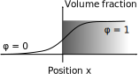

Kim-Kim-Suzuki Model
The Kim-Kim-Suzuki model is a method for modeling multiphase systems. A defining feature of the model is that the free energies are described by individual concentrations in each phase and order parameters. The different phases co-exist on each "pixel" of the domain, and thus the chemical potential in each co-existing phase is equal. Here, we will go through the theory for two phases, labeled α and β. A schematical illustration of the free energies is shown below.
In the following we denote the concentration in the α-phase cα and the concentration in the β-phase cβ. The total free energy is given by
φ is a field variable that goes from 0 to 1. If it is 0, there is only α phase and if it is 1 there is only β. The function h(φ) is an interpolating function given by
g(φ) is a function that creates a barrier between the two basins of attraction φ = 0 and φ = 1
Since the two phases co-exist, the chemical potential has to be equal in both phases. This is expressed via the constraint
Furthermore, the concentration at a point in space is given by the weighted average of the concentrations in the individual phases
We want to know the time evolution of the total concentration c and the field φ The total concentration is conserved, while the field φ is not a conserved quantity
We therefore need partial derivatives of f with respect to the total concentraion c and φ. Thus, cα and cβ are functions of the variables c and φ. To evaluate the functional derivatives, the partial derivatives of cα and cβ with respect to c, when φ and with respect to φ when c is fixed, are needed. When the concentration in the two phases changes by a small amount (cα→ cα + Δcα and cβ→ cβ + Δcβ), the equation relating the the chemical potentials in the two phases can be expanded to first order in the changes
Moreover, from the equation defining the total concentration we find
The partial derivatives of cα and cβ with respect to c (at fixed φ) can now be found from the ratios Δcα/Δ c and Δcβ/Δ c. Combining the results yields the following relations
We proceed in a similar manner to find the partial derivatives with respect to φ, when c is fixed. The strategy is to find how the individual concentrations in the two phases when φ changes by a small amount, such that c remains unchanged.
By expanding h to first order in φ and neglecting terms of order &Delta: φΔ cα, we arrive at
After collecting the results we find the following relations
Interface Profile
In this section we explore the interface profile of the KKS model. A sketch of how the volume fraction φ changes across an interface is shown below
An important feature of the KKS is model is that the concentrations in the to phases does not change across an interface. However, the total concentration c can change because the volume fraction of phase α and β changes. Consequently, the excess energy associated with an interface is independendent of fα and fβ. The only remaining part of the overall free energy density is

We can now match the interface energy σ of a sharp interface with the energy of a diffuse interface via
where the dependence on φ' has explicitly been included in the integrand. To solve the integral, we need to know the profile φ(x). This is done be seeking a stationary profile (e.g. δσ = 0).
which we recognize as the Euler-Lagrange equation. By substituting d/dφ = dx/dφ d/dx and multiplying both sides with dx/dφ we arrive at
as φ →, 1 g → 0 and φ' → 0. Thus, the integration constant above has to be zero. By replacing φ' in the integral and introducing the substitution dx = dφdx/dφ we finally arrive at
The next (and very important) step is to determine how the width of the diffuse interface depends on the parameters W and γ. In other words, we need to solve the first order differential equation
We skip the details on how to solve the equation, but the solution is
From the solution, we find that the width l of the interface is approximately
Specializing The Model
In this section we introduce concrete expressions for the free energies and finally end up with a closed form system of equations that can be solved numerically. We will use two parabolic functions for the free energies
where f0 is a constant. By inserting the explicit free energy forms into the general relations above, we end up with the following system of equations
In the upper figure in the right column, the concentration was randomized on the interval [0, 1) and φ was set equal to the concentration.